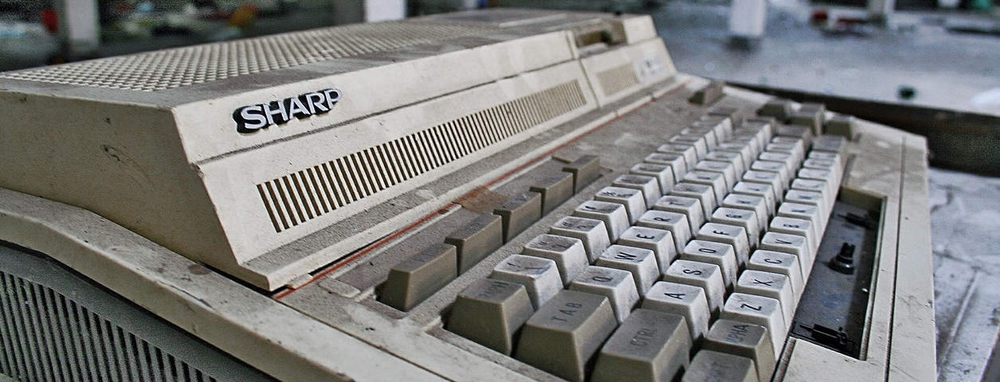

I recently attended a one-day evaluation workshop for the PERCICLES Project as an invited reviewer. PERICLES (#periclesfp7) stands for Promoting and Enhancing Reuse of Information throughout the Content Lifecycle taking account of Evolving Semantics. The aim was to give feedback and suggestions on the projects progress and how they could meet their goals. The meeting was hosted at the Belgium Institute for Space Aeronomy, in Brussels, and it took place on 29th October, 2015.
There were some very interesting/impressive people in attendance, and I would say that it was an excellent opportunity for me to consider an aspect of Open Science that I think is critical, but perhaps often over-looked: While a frequent goal of Open Science is to be reproducible and accessible, the need for preservation strategies are not so clearly articulated.
Perservation Science is certainly a whole scientific field in its own right. In researching this subject in preparation for the workshop and listening to the presenters, I now think that the Open Science movement should explicitly encourage an understanding of long-term data preservation as part of its goal of ensuring long-term reproducibility. This would including educating researchers and encouraging them as to proper data documentation practices, encouraging the use of open formats, integrity checks, authors selecting proper rights to the data, and being responsible for some type of archival strategy.
Speaking after the workshop with the co-investigator of the project Dr. Simon Waddington was particularly illuminating, and I now certainly hope that PERICLES can succeed in impacting practices in the Scientific community. When I think back over my own experience, it is very true that I have seen large amounts of time and energy be wasted, essentially being trapped in the past, through format or hardware obsolescence. (Indeed, my PhD supervisor once gave me some reels of magnetic tape, relics of research past, effectivley useless now except as paperweights.) This is of course compounded by software development practices which don't consider portability or even attempt to be comprehensible to future users!
{kind=link}
Hopefully projects like PERICLES can help to break the status-quo that "Digital information lasts forever--or five years--whichever comes first" (Jeff Rothenberg, 1999).
Go Top
comments powered by Disqus